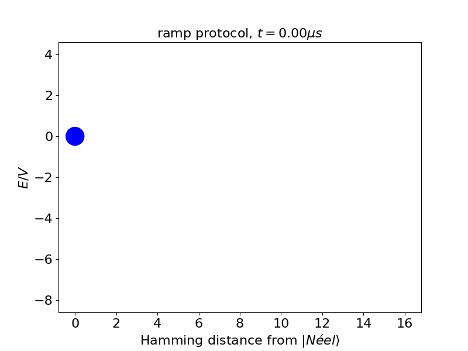

Animations for “Probing false vacuum decay and bubble nucleation in a Rydberg atom array”
Figure R7: The energy landscape of the product states at V/\Delta_l\ \approx\ 2 (the resonance condition for\ L=2\ bubbles). Each blue dot in the landscape represents a manifold of product states, grouped by their Hamming distance from the |Néel⟩ state and their relative static energy E/V. The area of each dot is proportional to the occupation probability of the state manifold at different times t after a quench (\mathrm{\Omega}/2\pi\ =1.8\ MHz).

Figure R8: Similar to figure R7, but the Rabi frequency \mathrm{\Omega} is slowly ramped up in 1\ \mu s.